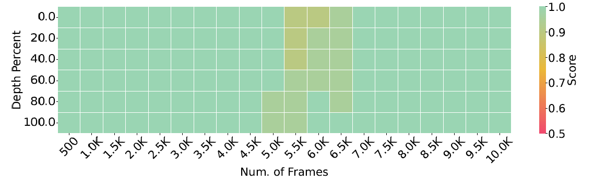
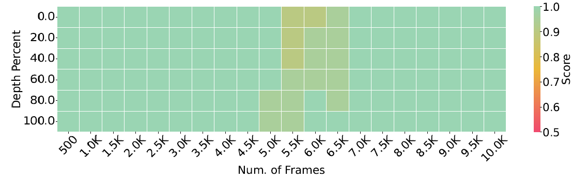

New Model: VideoChat-Flash
🚀State-of-the-art performance in short and long video understanding, with temporal localization capabilities comparable to expert models.

ðŸ”Supports ultra-long video inputs, achieving a groundbreaking needle-in-a-haystack evaluation accuracy of 99.1% on 10,000 frames, capable of processing videos up to three hours long.


⚡Highly efficient model architecture with exceptional inference speed, encoding each video frame into just 16 tokens, making it 5–10 times faster than the previous model.